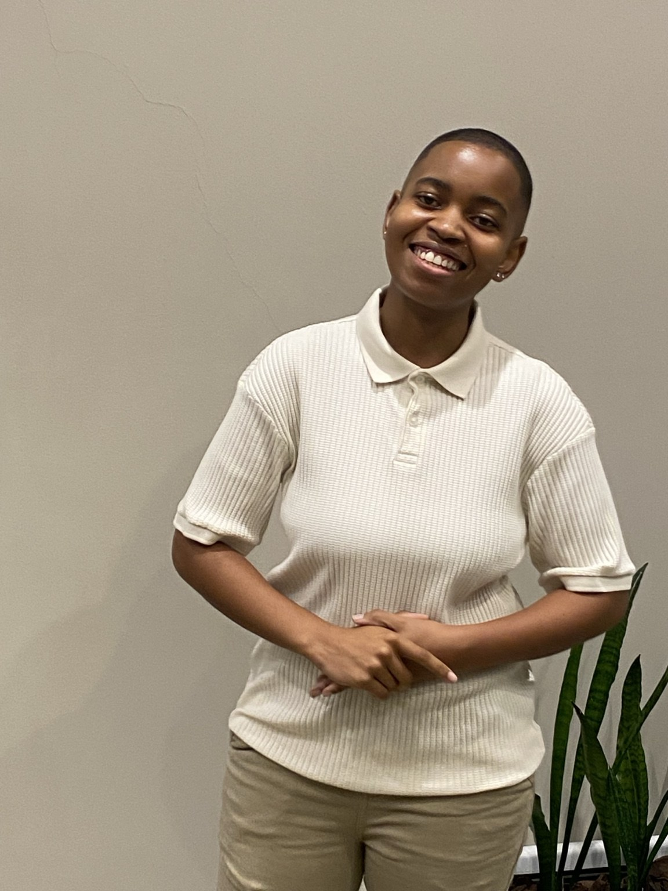

ICT Lecturer · Full Stack Developer · Computing Researcher
Andiswa
Sibusisiwe
Phewa
I teach computing, develop software, work with data and conduct research across technology, learning and digital systems.

Teaching, software and research in one practice.
My work combines higher education, application development, data analytics, statistical analysis and computing research. Each area strengthens how I teach, build and investigate technology.
Technical work with range.
From Java and C# systems to REST APIs, testing, deep learning, statistics and data analysis.
Software and APIs
Cybersecurity, Java and RaceDay systems
Programming implementations covering authentication, object-oriented design, conversational applications, MVC and REST API architecture.
View software projectsData and statistics
Analytics portfolio
Classification, deep learning, conflict data analysis, recommendation systems and statistical modelling.
View analyticsResearch
Predictive modelling and privacy
Postgraduate Data Analytics research and broader computing research across privacy, HCI and digital systems.
View researchTechnical concepts made practical.
Programming, web development, APIs, databases and software quality are taught through applied examples and structured software development work.
Explore teaching